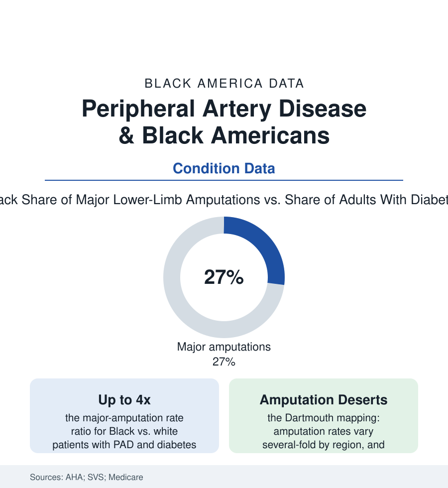

Black Public Health
Peripheral Artery Disease: The Circulation Gap Measured in Limbs
Black Americans with blocked leg arteries face amputation at rates up to four times higher — and receive flow-restoring procedures less — in the vascular surgery data.

Peripheral artery disease — the same atherosclerosis that closes heart and brain arteries, closing the legs' — is where this section's treatment gaps stop being measured in risk ratios and start being measured in limbs: Black Americans with PAD undergo major amputation at rates two to four times higher than white patients in the Medicare and registry analyses, and receive the artery-opening procedures that prevent amputation at lower rates in the same data. This article reads the vascular file. The disease is common, the test is cheap, and the procedures exist — which is what makes this file's numbers a decision rather than a fate, recorded one limb at a time.
The Pathway: From Cramping Calf to the Surgeon's Ledger
PAD's clinical story is a staircase the data let us watch patients fall down at different speeds: the disease's long silent phase (the ankle-brachial index studies finding Black adults' PAD prevalence comparable or higher, much of it undiagnosed — the leg pain of walking, claudication, attributed to age and arthritis in the survey record), the diabetes accelerant (the diabetic foot ulcer — the wound that will not heal on a starved circulation — entering the wound-care and podiatry data as the amputation pathway's front door), and the critical-limb stage where the choice narrows to restoring flow or removing the limb. The procedural data draw the divergence precisely there: the revascularization file (angioplasty, stenting, bypass — the interventions whose timing saves legs) showing Black patients receiving them at lower rates and later stages in the Medicare analyses, and the amputation file showing the complement — the major (below- and above-knee) amputations concentrated in the same patients, with the geographic layer's verdict on top (the Dartmouth Atlas tradition mapping amputation rates by hospital region and finding the map's hottest zones laid over the rural Black South, several-fold the rates of the lowest regions — the 'amputation belt' the vascular literature now names outright, its borders drawn by surgeon supply, hospital capability, and the road distance to a vascular lab). The within-hospital analyses complete the picture's hardness: the gaps persist inside the same institutions and insurance classes in the better studies — the decision at the limb's bedside sorting by more than the artery's anatomy.
What Prevention and Earlier Doors Look Like
The counter-literature is unusually concrete, because the intervention points are known: the screening layer (the ABI test — ten minutes, a blood-pressure cuff at the ankle — whose deployment in high-risk clinics the guidelines endorse and whose real-world use in the safety-net data lags), the wound-care layer (the multidisciplinary limb-salvage teams — vascular, podiatry, endocrinology, wound nursing under one roof — whose published results cut major amputations by a third to a half wherever they are built, and whose map is thinnest exactly in the amputation belt's hospitals), the diabetes-control layer (the glucose, pressure, and statin management of the diabetes file — PAD being, in the vascular surgeons' own framing, a report card on twenty years of primary care arriving in their operating room), and the workforce-and-trust layer (Black vascular surgeons' low-single-digit share of the specialty in the workforce data; the patient-side record of amputations recommended and second opinions sought — the community's inherited knowledge of the limb file making the salvage conversation start from suspicion the honest surgeon must answer with pictures of the artery itself). The policy rows are written in the Medicare data: the amputation rate is one of the few outcomes the disparities literature tracks falling where the systems invest — the VA's limb-salvage build-out and the integrated systems' wound programs publishing their declines — the file's proof that the gap is a systems output, and therefore a systems choice.
Reading the Vascular Data
A leg is not a statistic, which is why this file matters in a section made of statistics: behind every ratio stands a grandfather who walks or does not, works or does not, lives independently or does not — the amputation's own mortality data (major amputation carrying five-year survival worse than many cancers in the vascular literature) making the limb a life-expectancy variable. The registries publish the procedures. The claims publish the amputations. The distance between them is where the legs were.
More in Black Public Health
Hypertension Among Black Adults: Prevalence, Control, and Consequences
About 55 percent of Black adults have hypertension — the highest rate of any U.S. group. Prevalence, onset, control, and the stroke, heart, and kidney consequences in the data.
Diabetes Among Black Adults: Prevalence and Complications
Nearly one in five Black adults has diabetes, diagnosed or undiagnosed — and its complications fall with particular weight. The CDC data on prevalence, control, and outcomes.
Black Life Expectancy: The Gap at Birth and Its Causes
Black life expectancy at birth is about 73 years, roughly five years below the national figure — the summary measure of every health gap in this section. The CDC data.
Source: American Heart Association PAD statistics; Society for Vascular Surgery registries; Medicare claims analyses; Dartmouth Atlas regional variation studies.